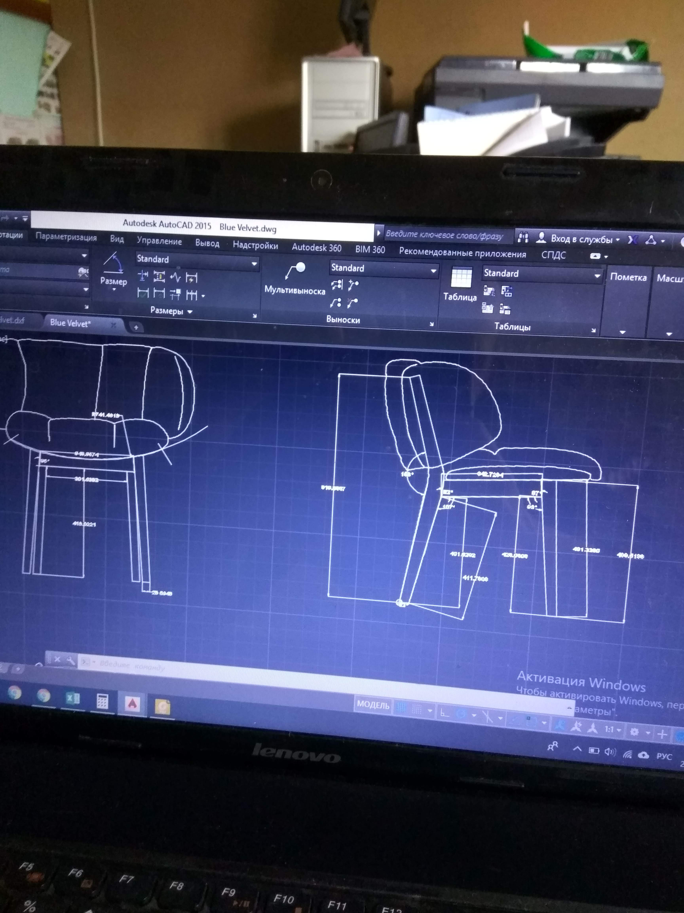
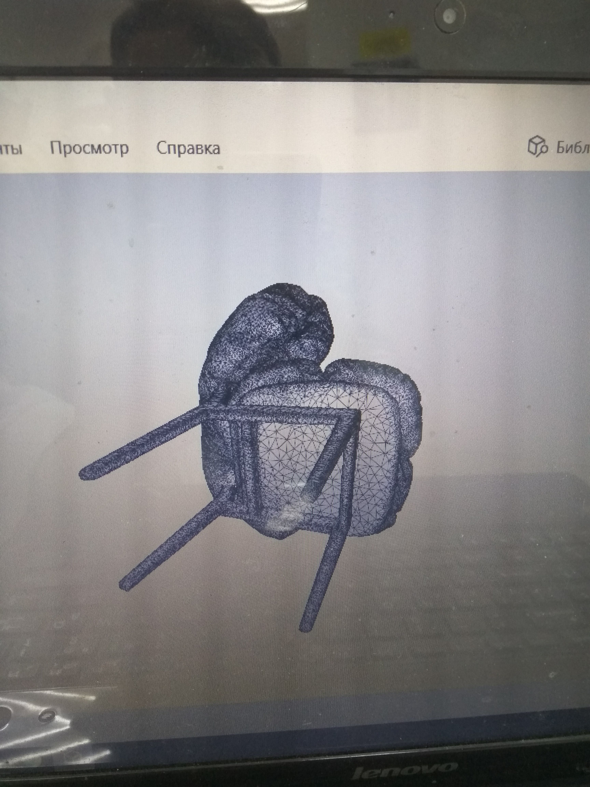
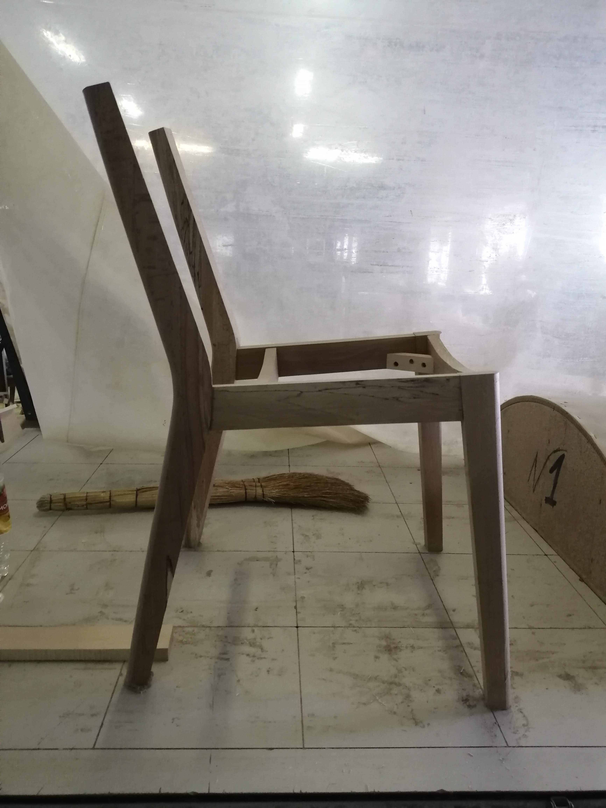
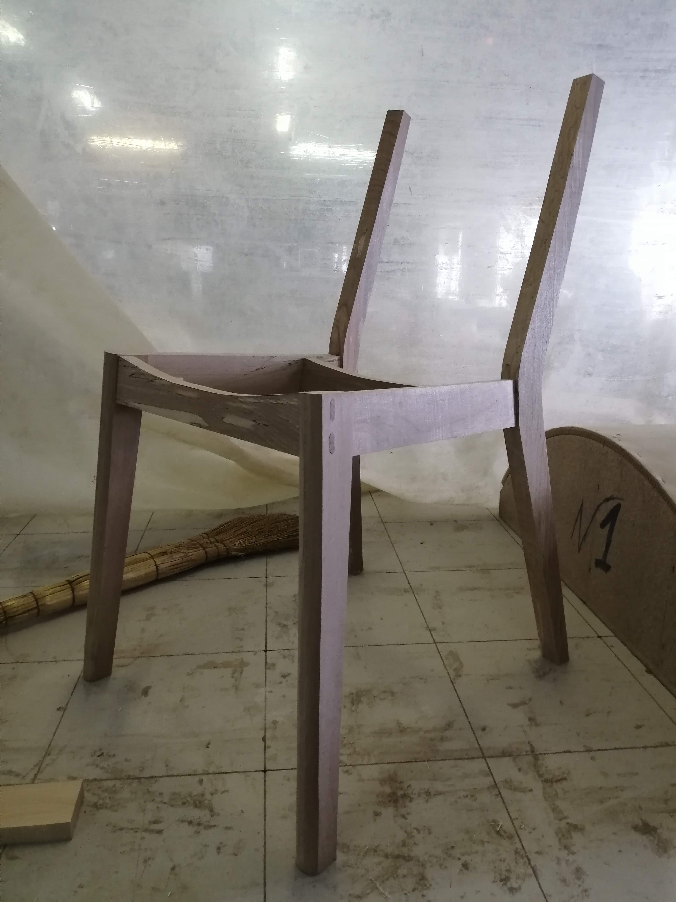
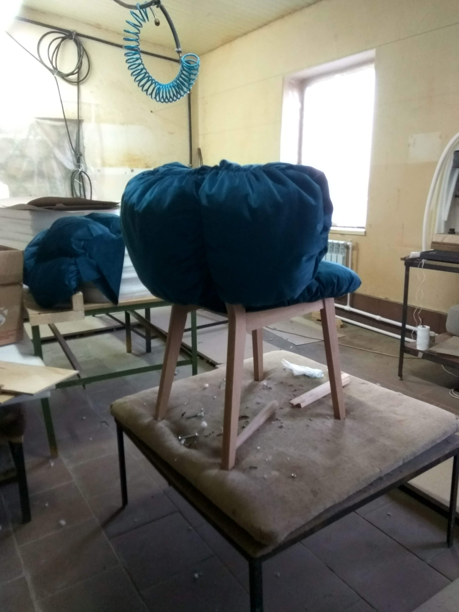
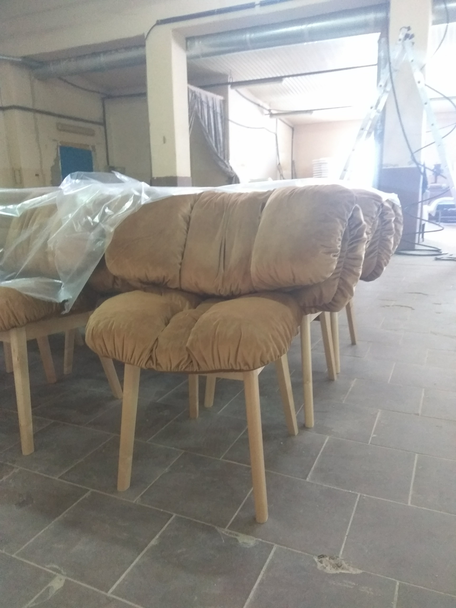
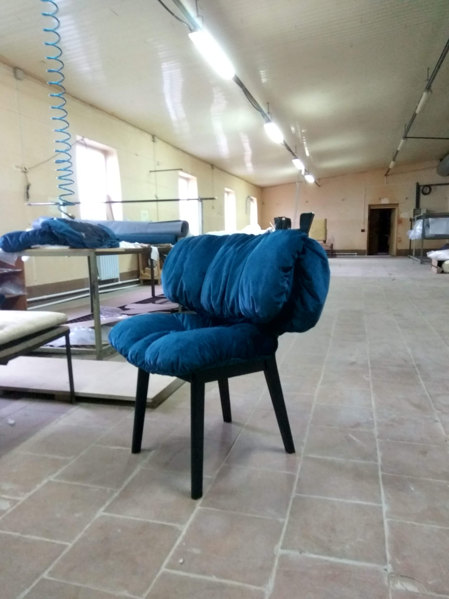

Разработка и производство авторских стульев для студийного проекта «Что было дальше». Проект включал полный цикл создания изделия — от первых чертежей и 3D-моделирования до изготовления каркасов, тестирования конструкции и финальной обивки.
Особое внимание уделялось пластике формы, комфорту посадки и выразительному силуэту, который должен был работать в кадре и формировать визуальную атмосферу пространства.
• CAD-моделирование и проектирование конструкции
• Создание тестовых каркасов
• Проверка эргономики и посадки
• Производство деревянных элементов
• Разработка мягкой формы и обивки
• Финальная сборка изделий






